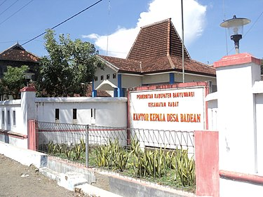

Sejarah
Badean adalah sebuah nama desa di wilayah Kecamatan Blimbingsari, Kabupaten Banyuwangi, Provinsi Jawa Timur, Indonesia.
Desa Badean dulunya merupakan bagian dari Kecamatan Kabat. Dulu desa ini memiliki akses yang tidak jauh jika ingin menuju ke Desa Blimbingsari, tetapi dikarenakan pembangunan Bandar Udara Blimbingsari, jalan diputus dan jika ingin menuju ke Blimbingsari, memutar terlebih dahulu melewati Desa Karangbendo.
Desa Badean terdiri dari perkampungan warga khas desa. Banyak terdapat lahan pertanian, padi dan lahan yang ditanami pohon-pohon seperti sengon. Wilayahnya yang berbatasan dengan laut juga menyebabkan di Desa Badean banyak penduduknya yang berprofesi sebagai nelayan.
Ada sebuah tugu yang terletak di simpang tiga di depan kantor desa. Namun pada tahun 2013 tugu ini dihancurkan.